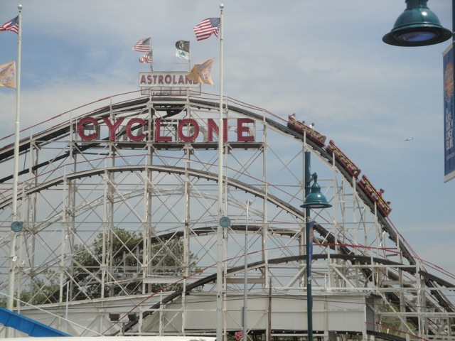
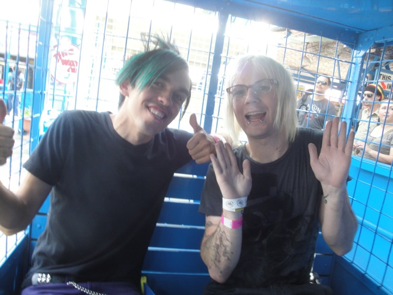
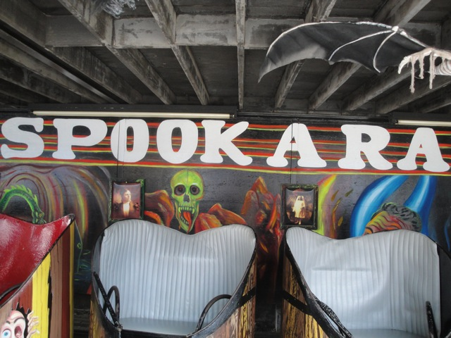
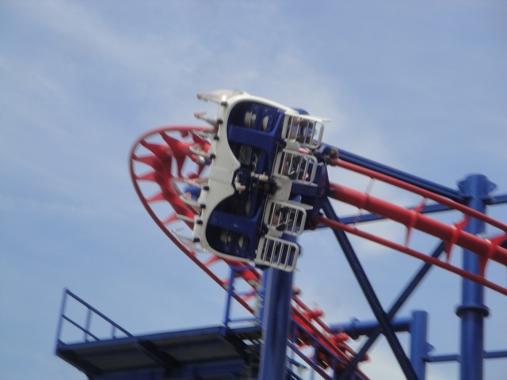
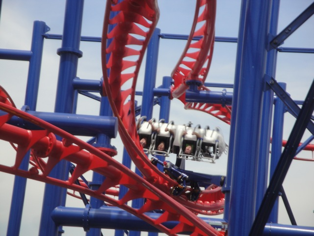
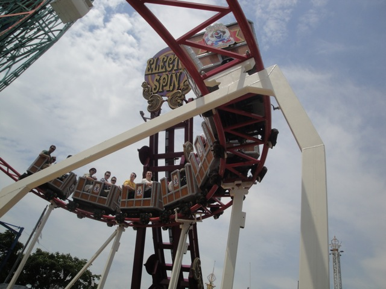
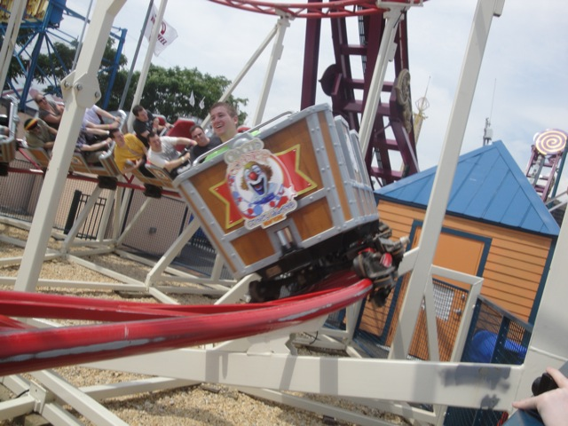

TPR's Northeast Trip
Bowcraft & NYC
Coney Island
Quassy
Lake Compounce Six Flags New England Palace Playland Funtown Splashtown Canobie Lake Park La Ronde Great Escape Six Flags Great Adventure
All right. Day 2 of the trip begins with a very interesting drive through New York City.
If you're going to litter, just make sure you don't do it from 9:30 - 11:00 AM on Tuesdays.
YAY!!!!!! WE MADE IT TO CONEY ISLAND!!!!!!!
 Hmm. I know they have a very famous roller coaster over at Coney Island. But I just can't put my finger on it.
Hmm. I know they have a very famous roller coaster over at Coney Island. But I just can't put my finger on it.
 I know they've tried to clone it everywhere, but could never come quite close to the original, but I still can't figure it out. Does it have to do with chicken?
I know they've tried to clone it everywhere, but could never come quite close to the original, but I still can't figure it out. Does it have to do with chicken?

Oh I know!!!! It's that new Volare!!!!! It quickly rose up as one of the most famous and historical coasters of all times!!! (In case you're too stupid to figure this out, I'm making sh*t up here. It's so obviously the Coney Island Cyclone.)
 The Coney Island Cyclone is a very interesting ride.
The Coney Island Cyclone is a very interesting ride.
 It's got nice laterals and some really crazy pops of ejector air. But it really does beat the living crap out of you.
It's got nice laterals and some really crazy pops of ejector air. But it really does beat the living crap out of you.
Have fun you guys.
 Aside from the Coney Island Cyclone, Coney Island has one other famous attraction. Deno's Wonder Wheel.
Aside from the Coney Island Cyclone, Coney Island has one other famous attraction. Deno's Wonder Wheel.
Sadly not. Truely a shame that Mickey's Fun Wheel is the ONLY other swinging Ferris Wheel.
Only the cool people take the swinging cars. (Oh wait, never mind. None of us are cool.)

Hey Robin!!! Where are you? We need you to come ride the Wonder Wheel with us please!!!
Dude, their Shock Drop is awesome!!! Much better than the one at Scandia.

They've also got Spookorama, which is an interesting dark ride to say the least.
"What the f*ck is this ride about?"
"Do you think any of those guys saw Zookeeper?"
"Are you my mother?"
 All right. Up next, would be Sea Serpent. Our first kiddy coaster of the day.
All right. Up next, would be Sea Serpent. Our first kiddy coaster of the day.
 Hey, for a kiddy coaster, it was actually decent. Better than both of yesterdays kiddie coasters.
Hey, for a kiddy coaster, it was actually decent. Better than both of yesterdays kiddie coasters.
NERD!!!!!!!!!!!!
 Oh boy. Another Volare.
Oh boy. Another Volare.
 I had really liked Time Warp @ Canada's Wonderland, so I was hoping this would be just as good.
I had really liked Time Warp @ Canada's Wonderland, so I was hoping this would be just as good.

And it was. Every good thing I said in my Time Warp Review applies here. In fact, this one may actually be even better.

That is some of the best hangtime ever!!!
 Up next is a modern take on a Coney Island Classic, the Steeplechase.
Up next is a modern take on a Coney Island Classic, the Steeplechase.
 We love these horses. They will soon become some of the finest glue around.
We love these horses. They will soon become some of the finest glue around.
 Dude! This ride kicks Pony Express's ass, and then sh*ts on it's corpse!!! It's actually fun, got a decent layout, and some good laterals as well.
Dude! This ride kicks Pony Express's ass, and then sh*ts on it's corpse!!! It's actually fun, got a decent layout, and some good laterals as well.
Hey Nick, what would this be called in Paramedic Talk?
Oh, and they also have the Original Famous Nathans here. And considering how much I loved the chain, going to the original was pretty sweet.
Best hot dog I've had in my life. Nuff said.
Just in case you forgot where we were.
Whoops. Looks like we stumbled onto the X-Rated Coney Island. Well, at least we know where Ceaser is.
 All right. Up next, we took a spin on the Tickler.
All right. Up next, we took a spin on the Tickler.
Tickler was an awesome spinning mouse since unlike most other spinning mice, this one spins throughout the whole course instead of just in the 2nd Half.
 Looks like only one of you guys is Ticklish.
Looks like only one of you guys is Ticklish.
 *Sniff* I miss Wild Rivers. Once again, I would just like to say "F*CK YOU IRVINE COMP!!!!!!"
*Sniff* I miss Wild Rivers. Once again, I would just like to say "F*CK YOU IRVINE COMP!!!!!!"
 The final credit we need at Coney Island.
The final credit we need at Coney Island.

Aww. It's just yet another Kiddy Coaster.

Though it was a really good kiddy coaster, it was still a kiddy coaster.
You filthy filthy credit whores.
Now that we got all the credits here, we can check out the flat rides at Coney Island. This bouncy bouncy ride was fun and all...
But Air Race was without a doubt, the star flat ride. This was seriously an awesome flat ride. It has great laterals due to it's fast spinning, flips alot, and is just an awesome awesome ride.
I love drop towers.
These frisbees may be small, but man do they pack a punch. Much better than some of the bigger ones.
I also rode my first Starflyer at Coney Island. While it was one of the small models, I still really liked it. While it didn't really scare me, I still really liked it and am hoping to try out the much bigger ones.
I had heard lots of good things about Saturn 6, so I ventured off on my own to give it a try.
It was a fun flat ride and all, but it wasn't worth the $6.00. Air Race and Brooklyn Flyer were much better flats anyway. But hey, it's still cheaper than f*cking Rockit at the Ventura County Fair.
We were definetly too big for this Stand Up Rocking Tug as we broke it and feared that we would miss the bus by not getting off the ride in time.
"This sign makes my brain hurt."
Later that night, we had a coming out party for Piers, because Piers being gay was such a shock. I know several people who should we should totally throw a coming out party for. *cough* Jersy *cough*
 And of course, you can't have a party for Peirs without having LOTS and LOTS of alcohol.
And of course, you can't have a party for Peirs without having LOTS and LOTS of alcohol.
"Something terrible has happened!!!!!"
"I'm gonna puke all over the bus tomorrow."
Quassy
Home